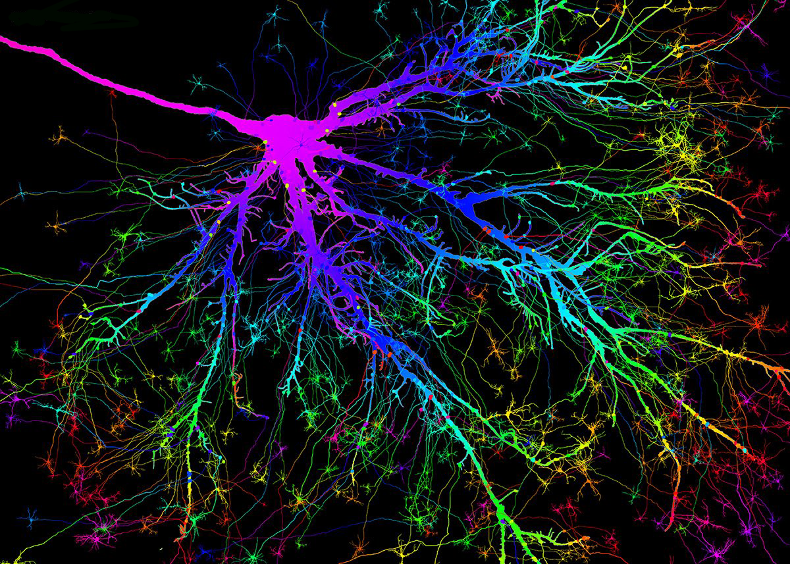
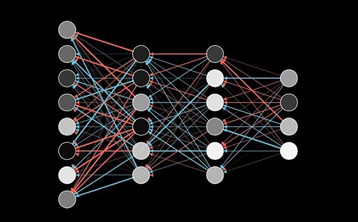

Relevance
There are computer systems capable of diagnosing diseases, planning treatment, performing operations,
solving complex mathematical equations in symbolic form.
Artificial intelligence(AI)
Based on the terminology, artificial intelligence (AI) is a program capable of effectively performing a certain task while learning
Artificial neural networks

Artificial neural networks calculate structures that can consist of a large number of elements, and each of these elements performs relatively simple functions.
What is a neural network?

Magenta
Magenta is a research project demonstrating the potential of machine learning in the creation of works of art and music.
Generative Pre-trained Transformer 3
GPT-3 (Generative Pre-trained Transformer 3) is the third generation of the natural language processing algorithm from OpenAI. The model, according to the developers, can be used to solve "any tasks in English".
Neural networks also have disadvantages:
-
The answer given by a neural network is always approximate – neural networks are not able to give accurate and unambiguous answers;
-
Inability to make decisions in several stages – a neural network cannot solve tasks that require sequential execution of several steps, it is able to solve the problem only "in one go";
-
Inability to solve computational problems – a neural network cannot solve problems that require sequential execution of several steps; it is able to solve the problem only "in one go";
-
Labor intensity and duration of training – it is required to train it on tens of millions of input data sets.